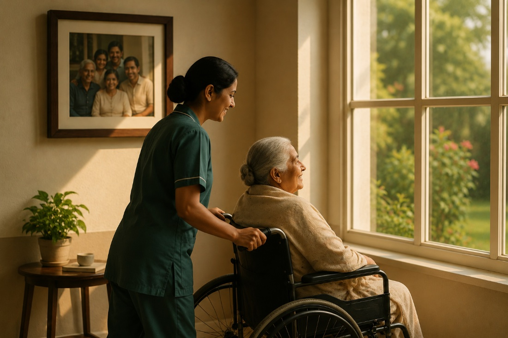

A lot of older people in the city spend the day on their own: children at work, grandchildren at school, the house quiet until evening. Vatsalya started so they'd have somewhere to go: people to sit with, a proper lunch, and help on hand if they need it.
It isn't fancy. A house, a bit of routine, and company, which turns out to be most of what people were missing.

Most of it comes down to one idea: look after other people's parents the way you'd want your own looked after.
Give older people somewhere to spend the day where they're treated like people, not patients, and where their families aren't worrying about them while they're at work.
To be the place in Nepal that families actually trust with their parents. The kind you hear about from a neighbour, not an advert.
Treat everyone with respect, keep the place clean and properly run, and let people make friends. Members, families and staff mostly know each other by name.
Proper care during the day, and overnight for those who stay. Something to do besides sit around. Regular health checks. A kitchen we'd eat from ourselves. We fix what isn't working as we go.
Come during the day, any day. Meet the staff, look around, ask whatever you want.